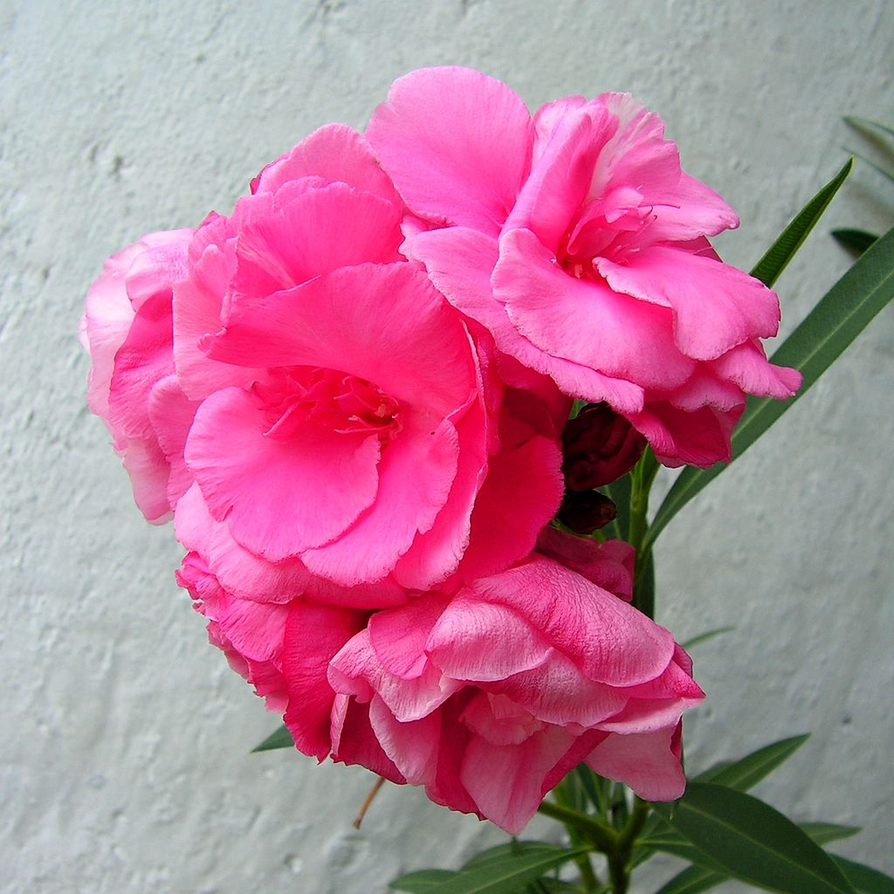
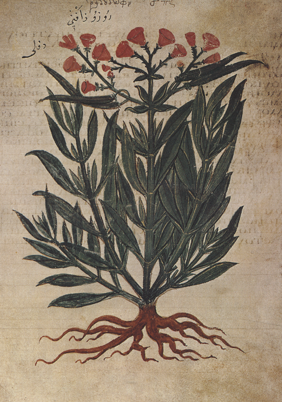

Про цветочки и не только!
Телефон: 89169996768
Почта: nimi9992@mail.ru
Олеандр
Описание
Олеандр — крупный вечнозелёный кустарник с ветвящимися стеблями буроватого цвета, покрытыми округлыми чечевичками. Листья узкие, до 10—15 см длиной и до 3 см шириной, ланцетные или линейно-ланцетные, цельнокрайные или неясногородчатые, на коротких черешках, голые, кожистые, со светлой срединной жилкой, расположены супротивно или в мутовкаx по 3 или 4. Цветки олеандра яркие, крупные, пятичленные, в щитковидных соцветиях на концах побегов. Венчик может иметь различную окраску: наиболее обычны белые и розовые лепестки, реже встречаются красные и жёлтые (желтоватые).
Особенности
Растение засухоустойчивое, но теплолюбивое, хотя и выносит зимние непродолжительные понижения температуры до минус 10 °C. Идеально произрастает в условиях средиземноморского климата. В условиях более холодного климата олеандр выращивают как кадочное растение с зимним содержанием в помещении (в теплице, оранжерее), а также как комнатное растение.
